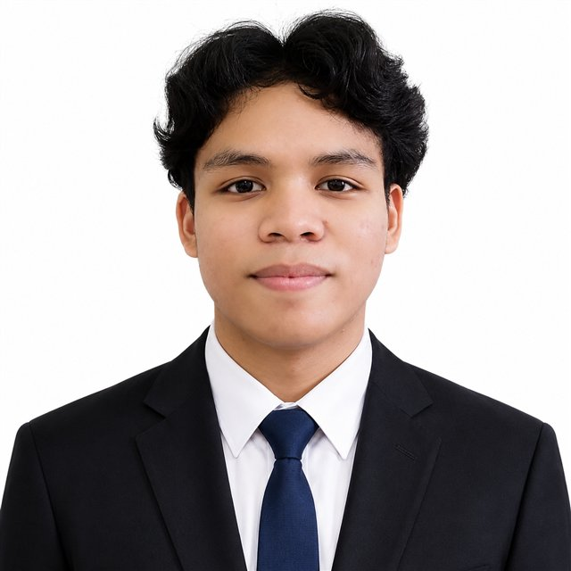

Mangrove areas were hard to keep on one map
Field knowledge lived in separate drawings, flights, and reviews. Nothing connected a resident’s polygon to next year’s observation.

Full-stack developer. I build Laravel web apps
and turn drone flights over mangrove forests into mapped, reviewed conservation data.
Capstone, 2026. A conservation map that residents can draw on, experts can review, and drones can fill in.
Field knowledge lived in separate drawings, flights, and reviews. Nothing connected a resident’s polygon to next year’s observation.
People draw on a map or upload an orthomosaic. Models find extent and suggest genus. Experts approve before anything is published.
Yearly observations and planting notes stay with each area, so change over time is visible instead of starting over every season.
A web system for mapping and monitoring mangrove areas in Southern Leyte. Residents draw mangrove areas on a satellite map or upload drone orthomosaics. A U-Net model finds the mangrove extent, a YOLO model suggests the genus, and experts approve each area before it is published.
Experts record yearly observations and planting recommendations, so every area keeps a history that the map plays back as a "Changes over time" timeline.
Pick a skill later and these cards light up where it was used.
Multi-gigabyte orthomosaics upload as parallel 8 MB chunks written straight to their offset. Pick the same files again and the upload resumes. Abandoned sessions are cleaned up daily.
A command runner wraps GDAL in the QGIS environment on Windows and calls it directly on Linux. Long jobs run on a dedicated queue with timeouts tuned so retries never overlap.
PHP calls Python inference scripts that report JSON. Admins upload and validate new weights in the app. The genus suggestion recounts live as the owner edits areas, without rerunning the model.
Submissions move through pending, approved and rejected states. Every revision is kept, residents get 7 days to fix a rejected area, and owners are notified by email and in the app.
Cuts a GeoTIFF into georeferenced training tiles, labels each with its mangrove percentage, and streams the ZIP download without a temporary file.
Leaflet with satellite imagery and OpenStreetMap place labels, a generated dark theme, swipe gestures on mobile, and installable as a PWA.
Pick a skill to see what it is, how it works, and where I've used it. Matching project cards stay lit.
Select a skill — I'll explain it, how it works, and where I used it on this page.
Smaller apps that taught the same habits: models, roles, and a clean request cycle.
Notes app with authentication, then extended with an admin role and privileges, role-based view rendering, and a basic REST API.
Users, workouts and workout sessions with full create, read, update and delete, using related Eloquent models.
A task list built on Laravel's resource controllers and Blade templates.
I'm open to internships and junior developer roles in web development, GIS, or applied machine learning.